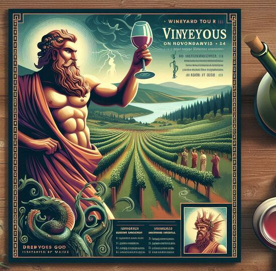

| 
|
Tour pela vinícola de Dionisio
e
Degustação de vinho sem álcool
Venha viver uma experiência única e desfrutar de uma viagem sensorial pelas
vinhas sagradas, guiada pela história e pelos mistérios da produção de vinhos divinos.
E
o melhor de tudo: deguste uma seleção especial de vinhos sem álcool, perfeitos para quem quer
apreciar o sabor e a sofisticação, sem os efeitos do álcool.
Reserve já o seu lugar nesse tour inesquecível e brinde com os deuses!
|